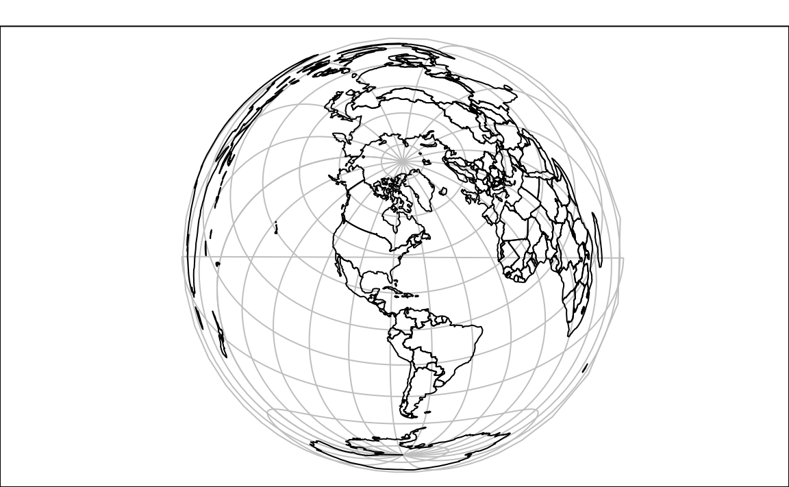

6 Reprojections and Transformations
Prerequisites
- This chapter requires the packages tidyverse, sf, raster:
library(tidyverse)
library(sf)
library(raster)- It also relies on spData and spDataLarge, which load
cycle_hire_osmdataset and provide external files:
library(spData)
library(spDataLarge)6.1 Introduction
As stated in Chapter 2.3, it is important to understand which CRS you are working in when undertaking spatial operations. Many spatial operations assume that you are using a projected CRS (on a Euclidean grid with units of meters rather than a geographic ‘lat/lon’ grid with units of degrees). The GEOS engine underlying most spatial operations in sf, for example, assumes your data is in a projected CRS. For this reason sf contains a function for checking if geometries have a geographic or projected CRS. This is illustrated below using the example of London:
london = st_sf(geometry = st_sfc(st_point(c(-0.1, 51.5))))
st_is_longlat(london)
#> [1] NAThe results show that when geographic data is created from scratch, or is loaded from a source that has no CRS metadata, the CRS is unspecified by default. CRS can be set with the st_set_crs function:30
london = st_set_crs(london, 4326)
st_is_longlat(london)
#> [1] TRUESpatial operations on objects without a CRS run on the implicit assumption that they are projected, even when in reality they are not. This can be seen by creating a buffer of one degree around the london point:
london_buff = st_buffer(london, dist = 1)
#> Warning in st_buffer.sfc(st_geometry(x), dist, nQuadSegs): st_buffer does
#> not correctly buffer longitude/latitude data
#> dist is assumed to be in decimal degrees (arc_degrees).As a result a warning message is emitted to warn the user that the operation may not work correctly and that, if the operation was intended, the distance should be in degrees (not meters or some other Euclidean distance measurement). The seemingly small difference in setting the CRS may seem inconsequential but it can have a huge impact. This is illustrated in Figure 6.1, which shows how the buffer created in the geographic CRS is dramatically elongated in the north-south direction due to the thinning of the vertical lines of longitude towards the Earth’s poles.
plot(london_buff, graticule = st_crs(4326), axes = TRUE)
plot(london, add = TRUE)
Figure 6.1: Buffer on data with geographic CRS.
To prevent this, we need to create a buffer based on a point in a projected CRS. For example, London has coordinates of c(530000, 180000) in British National Grid CRS (EPSG:27700):
london_proj = st_sf(geometry = st_sfc(st_point(c(530000, 180000))), crs = 27700)This projected CRS has units in meters. One degree at the equator represents 111,319.9 meters and we can use this value to create our buffer:
london_proj_buff = st_buffer(london_proj, 111319.9)The result in Figure 6.2 shows that buffers based on a projected CRS are not distorted and we can expect the same distance from our point to every part of the buffer’s border.
plot(london_proj_buff, graticule = st_crs(27700), axes = TRUE)
plot(london_proj, add = TRUE)Figure 6.2: Buffer on data with projected CRS.
6.2 Transforming the CRS
While CRSs can be set manually, it is more common in real world applications to transform a known CRS into another. CRS transformation could be vital to obtain proper results in many cases. A typical example is when geometry data is provided in a geographic CRS but you want to do spatial operations, which require it to be in a projected CRS. It includes distance measurements or area calculations. CRS also represent spatial relationship between datasets. Therefore, spatial operations on many datasets can only be correctly performed when all the data have the same CRS. The most common reason to unify the CRS is to combine different datasets (e.g. merge two rasters) or apply methods which need at least two objects (e.g spatial subsetting or raster map algebra). Let’s use real-world examples to illustrate this.
6.2.1 Vector data
Vector data on the most basic level is represented by individual points, and points create more complex objects, such as lines and polygons. Spatial reprojection of vectors is a mathematical transformation of coordinates of these point. Depending on projections used, reprojection could be either lossy or lossless. For example, loss of spatial information could occur when the new CRS is only adequate for smaller area than input vector. The precision could be also lost when transformation is between coordinate systems that have different datum - in those situations approximations are used. However, in most cases CRS vector transformation is lossless.
The dataset cycle_hire_osm represents all cycle hire locations across London, taken from OpenStreetMap (OSM). It is automatically loaded by the spData package, meaning we do not have to load it, and its CRS can be queried as follows:
st_crs(cycle_hire_osm)
#> Coordinate Reference System:
#> EPSG: 4326
#> proj4string: "+proj=longlat +datum=WGS84 +no_defs"CRS in R can be described as an epsg code or a proj4string definition, as described in section 2.3.3. Let’s create a new version of cycle_hire_osm in a projected CRS, using the epsg number of 27700:
cycle_hire_osm_projected = st_transform(cycle_hire_osm, 27700)
st_crs(cycle_hire_osm_projected)
#> Coordinate Reference System:
#> EPSG: 27700
#> proj4string: "+proj=tmerc +lat_0=49 +lon_0=-2 +k=0.9996012717 +x_0=400000 +y_0=-100000 +ellps=airy +towgs84=446.448,-125.157,542.06,0.15,0.247,0.842,-20.489 +units=m +no_defs"Note that the result shows that the epsg has been updated and that proj4string element of the CRS now contains, among other things +proj=tmerc (meaning it is a projected CRS using the tranverse Mercator projection) and +units=m (meaning the units of the coordinates are meters). Another function, from the rgdal library, provides a note containing the name of the CRS:
crs_codes = rgdal::make_EPSG()[1:2]
dplyr::filter(crs_codes, code == 27700)
#> code note
#> 1 27700 # OSGB 1936 / British National GridThe result shows that the EPSG code 27700 represents the British National Grid, a result that could have been found by searching online for “CRS 27700”. The formula that converts a geographic point into a point on the surface of the Earth is provided by the proj4string element of the crs (see proj4.org for further details):
st_crs(27700)$proj4string
#> [1] "+proj=tmerc +lat_0=49 +lon_0=-2 +k=0.9996012717 +x_0=400000 +y_0=-100000 +ellps=airy +towgs84=446.448,-125.157,542.06,0.15,0.247,0.842,-20.489 +units=m +no_defs"crs attribute of the object’s geometry. It is hidden from view for most of the time except when the object is printed but can be can identified and set using the st_crs function, for example st_crs(cycle_hire_osm)$epsg.
6.2.2 Raster data
The basic concepts of CRS apply to both vector and raster data model. However, there are important differences in reprojection of vectors and rasters. Transformation of CRS in vector data changes coordinates of each vertex. This do not apply to raster data. Rasters are are composed of rectangular cells of the same size (expressed by map units, such as degrees or meters). To preserve this property, it is impossible to transform coordinates of cells separately. This entails that a new raster could have a different number of columns and rows, and therefore different number of cells that the original one. Therefore, values of these new cells need to be estimated after a geometric operation is completed. The projectRaster() function’s role is to reproject Raster* objects into a new object with another coordinate reference system. Compared to st_tranform(), projectRaster() only accepts the proj4string definitions.
proj4string definition with "+init=epsg:MY_NUMBER". For example, one can use the "+init=epsg:4326" definition to set CRS to WGS84 (EPSG code of 4326). The PROJ.4 library automaticaly adds the rest of parameters and converts it into "+init=epsg:4326 +proj=longlat +datum=WGS84 +no_defs +ellps=WGS84 +towgs84=0,0,0",
Let’s take a look at two examples of raster transformation - using categorical and continuous data. Land cover data are usually represented by categorical maps. The nlcd2011.tif file provides information for a small area in Utah, USA obtained from National Land Cover Database 2011 in the NAD83 / UTM zone 12N CRS.
cat_raster = raster(system.file("raster/nlcd2011.tif", package = "spDataLarge"))
cat_raster
#> class : RasterLayer
#> dimensions : 1359, 1073, 1458207 (nrow, ncol, ncell)
#> resolution : 31.5, 31.5 (x, y)
#> extent : 301903, 335735, 4111244, 4154086 (xmin, xmax, ymin, ymax)
#> coord. ref. : +proj=utm +zone=12 +ellps=GRS80 +towgs84=0,0,0,0,0,0,0 +units=m +no_defs
#> data source : /home/travis/R/Library/spDataLarge/raster/nlcd2011.tif
#> names : nlcd2011
#> values : 11, 95 (min, max)In this region, 14 land cover classes were distinguished31:
unique(cat_raster)
#> [1] 11 21 22 23 31 41 42 43 52 71 81 82 90 95When reprojecting categorical raster, we need to ensure that our new estimated values would still have values of our original classes. This could be done using the nearest neighbor method (ngb). In this method, value of the output cell is calculated based on the nearest cell center of the input raster.
For example, we want to change the CRS to WGS 84.
It can be desired when we want to visualize a raster data on top of a web basemaps, such as the Google or OpenStreetMap map tiles. The first step is to obtain the proj4 definition of this CRS, which can be done using the http://spatialreference.org webpage. The second and last step is to define the reprojection method in the projectRaster() function, which in case of categorical data is the nearest neighbor method (ngb):
wgs84 = "+proj=longlat +ellps=WGS84 +datum=WGS84 +no_defs"
cat_raster_wgs84 = projectRaster(cat_raster, crs = wgs84, method = "ngb")
cat_raster_wgs84
#> class : RasterLayer
#> dimensions : 1394, 1111, 1548734 (nrow, ncol, ncell)
#> resolution : 0.000356, 0.000284 (x, y)
#> extent : -113, -113, 37.1, 37.5 (xmin, xmax, ymin, ymax)
#> coord. ref. : +proj=longlat +ellps=WGS84 +datum=WGS84 +no_defs +towgs84=0,0,0
#> data source : in memory
#> names : nlcd2011
#> values : 11, 95 (min, max)Many properties of the new object differs from the previous one, which include the number of columns and rows (and therefore number of cells), resolution (transformed from meters into degrees), and extent. In the same time, it keeps the same land cover classes - unique(cat_raster_wgs84).
This process of reprojection is almost identical for continuous data. The srtm.tif file contains digital elevation model for the same area in Utah from the Shuttle Radar Topography Mission (SRTM). Each value in this raster represents elevation measured in meters.
con_raster = raster(system.file("raster/srtm.tif", package = "spDataLarge"))
con_raster
#> class : RasterLayer
#> dimensions : 457, 465, 212505 (nrow, ncol, ncell)
#> resolution : 0.000833, 0.000833 (x, y)
#> extent : -113, -113, 37.1, 37.5 (xmin, xmax, ymin, ymax)
#> coord. ref. : +proj=longlat +datum=WGS84 +no_defs +ellps=WGS84 +towgs84=0,0,0
#> data source : /home/travis/R/Library/spDataLarge/raster/srtm.tif
#> names : srtm
#> values : 1024, 2892 (min, max)The nearest neighbor method should not be used for continuous raster data, as we want to preserve gradual changes in values. Alternatively, continuous data could be reprojected in the raster package using the bilinear method. In this technique, value of the output cell is calculated based on four nearest cells in the original raster. The new value is a weighted average of values from these four cells, adjusted for their distance from the center of the output cell. This dataset has geographic CRS and we want to transform it into projected CRS.
In the fist step we need to obtain the proj4 definition of the existing projected CRS appropariate for this area or create a new one using the Projection Wizard online tool (Šavrič, Jenny, and Jenny 2016). For this example, we used the Oblique Lambert azimuthal equal-area projection. The second step is to define the bilinear reprojection method:
equalarea = "+proj=laea +lat_0=37.32 +lon_0=-113.04"
con_raster_ea = projectRaster(con_raster, crs = equalarea, method = "bilinear")
con_raster_ea
#> class : RasterLayer
#> dimensions : 467, 478, 223226 (nrow, ncol, ncell)
#> resolution : 73.9, 92.5 (x, y)
#> extent : -18178, 17146, -21306, 21892 (xmin, xmax, ymin, ymax)
#> coord. ref. : +proj=laea +lat_0=37.32 +lon_0=-113.04 +ellps=WGS84
#> data source : in memory
#> names : srtm
#> values : 1027, 2891 (min, max)Reprojection of continuous rasters also changes spatial properties, such as the number of cells, resolution, and extent. Moreover, it slightly modifies values in the new raster, which can be seen by comparing the outputs of the summary() function between con_raster and con_raster_ea.
summary(con_raster)
summary(con_raster_ea)6.3 Geometry transformations
6.3.1 Clipping
Spatial clipping is a form of spatial subsetting that involves changes to the geometry columns of at least some of the affected features.
Clipping can only apply to features more complex than points: lines, polygons and their ‘multi’ equivalents. To illustrate the concept we will start with a simple example: two overlapping circles with a center point one unit away from each other and radius of one:
b = st_sfc(st_point(c(0, 1)), st_point(c(1, 1))) # create 2 points
b = st_buffer(b, dist = 1) # convert points to circles
l = c("x", "y")
plot(b)
text(x = c(-0.5, 1.5), y = 1, labels = l) # add text
Figure 6.3: Overlapping circles.
Imagine you want to select not one circle or the other, but the space covered by both x and y. This can be done using the function st_intersection(), illustrated using objects named x and y which represent the left and right-hand circles:
x = b[1]
y = b[2]
x_and_y = st_intersection(x, y)
plot(b)
plot(x_and_y, col = "lightgrey", add = TRUE) # color intersecting area
The subsequent code chunk demonstrate how this works for all combinations of the ‘Venn’ diagram representing x and y, inspired by Figure 5.1 of the book R for Data Science (Grolemund and Wickham 2016).

Figure 6.4: Spatial equivalents of logical operators.
To illustrate the relationship between subsetting and clipping spatial data, we will subset points that cover the bounding box of the circles x and y in Figure 6.4. Some points will be inside just one circle, some will be inside both and some will be inside neither.
There are two different ways to subset points that fit into combinations of the circles: via clipping and logical operators. But first we must generate some points. We will use the simple random sampling strategy to sample from a box representing the extent of x and y. To generate this points will use a function not yet covered in this book, st_sample(). Next we will generate the situation plotted in Figure 6.5:
bb = st_bbox(st_union(x, y))
pmat = matrix(c(bb[c(1, 2, 3, 2, 3, 4, 1, 4, 1, 2)]), ncol = 2, byrow = TRUE)
box = st_polygon(list(pmat))
set.seed(2017)
p = st_sample(x = box, size = 10)
plot(box)
plot(x, add = TRUE)
plot(y, add = TRUE)
plot(p, add = TRUE)
text(x = c(-0.5, 1.5), y = 1, labels = l)
Figure 6.5: Randomly distributed points within the bounding box enclosing circles x and y.
References
Šavrič, Bojan, Bernhard Jenny, and Helen Jenny. 2016. “Projection Wizard – An Online Map Projection Selection Tool.” The Cartographic Journal 53 (2): 177–85. doi:10.1080/00087041.2015.1131938.
Grolemund, Garrett, and Hadley Wickham. 2016. R for Data Science. 1 edition. O’Reilly Media.
CRS could be also added when creating the object with the following command:
st_sf(geometry = st_sfc(st_point(c(-0.1, 51.5))), crs = 4326)↩Full list of NLCD2011 land cover classes can be found at https://www.mrlc.gov/nlcd11_leg.php↩